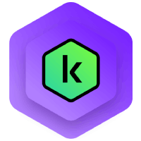

Cybersicherheit für Privatanwender: Die Top-Virenschutz-Lösungen im Test
Sind Sie auch auf der Suche nach dem optimalen Schutz für Ihren Computer? In einer digitalen Welt voller Cybersicherheitsrisiken wird die Wahl der richtigen Antivirensoftware immer wichtiger.
Warum ein guter Virenschutz entscheidend ist:
Cyberkriminelle entwickeln ständig neue Methoden, um an persönliche Daten zu gelangen oder Systeme zu schädigen. Ein zuverlässiges Antivirenprogramm ist daher keine Option mehr, sondern eine Notwendigkeit. Unsere Vergleichstabelle hilft Ihnen, die beste Lösung für Ihre individuellen Bedürfnisse zu finden.
Kostenlose Antivirenprogramme wie Avast Free Antivirus sind oft problematisch: Sie können den PC erheblich verlangsamen und bieten nur grundlegenden Schutz. Deshalb haben wir einen umfassenden Vergleich hochwertiger Antivirenlösungen erstellt, der auf verschiedenen Messverfahren wie Sicherheit, Systembelastung, Preis-Leistung und Benutzerfreundlichkeit basiert. Diese Verfahren helfen dabei, Antivirenlösungen zu bewerten, die sowohl effektiv als auch ressourcenschonend sind, um den besten Schutz für Ihren Computer zu gewährleisten.
| Platzierung | Software | Bewertung | Icon | Besonderheiten |
|---|---|---|---|---|
| 1. | Bitdefender Total Security | Hervorragender Schutz, geringe Systembelastung | ||
| 2. | AVG Internet Security | Benutzerfreundlich, solide Schutzfunktionen | ||
| 3. | Kaspersky Plus |  | Geringe Systembelastung, gutes Preis-Leistungs-Verhältnis | |
| 4. | Avira Internet Security | Umfangreiche Sicherheitsfunktionen, mittelmäßiges Preis-Leistungs-Verhältnis | ||
| 5. | Avast Internet Security | Guter Schutz, aber hohe Systembelastung, vorallem bei älteren Geräten |